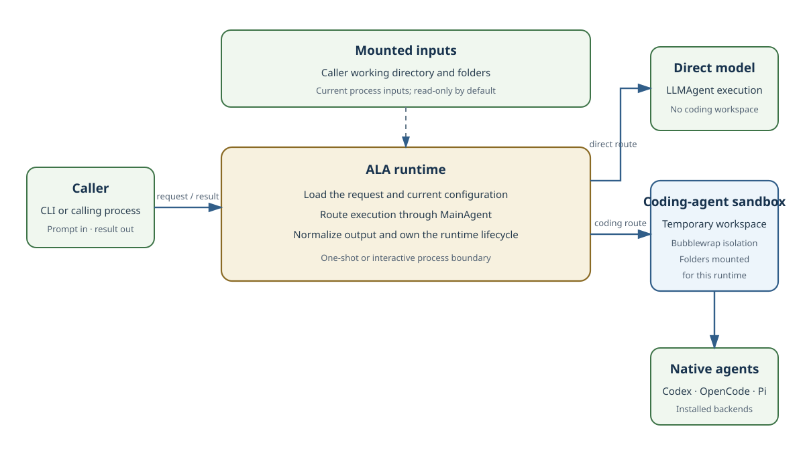

Runtime and task-repository architecture
ALA owns request loading, configuration, task-skill discovery, runtime routing, sandboxed coding-agent delegation, normalized output, and cleanup. Independent task repositories add specialized methods through task skills without becoming part of the core runtime.
System architecture

The CLI and input loader compose one request from command arguments and supported payload sources. Configuration and task-repository discovery establish the current models, backend priority, web-search state and Anthropic task-skill catalog. The runtime passes the request through MainAgent, then either uses direct LLMAgent execution or the internal coding-agent Code Skill. CodingAgentService owns backend discovery, Bubblewrap construction, native CLI invocation, event parsing and temporary workspace cleanup.
Responsibility boundary
A task repository decides which requests it covers, which task skill performs the work, which inputs and outputs are valid, and how the result is checked. ALA discovers the repository's Anthropic descriptors and makes them available to an authenticated coding agent. The agent reads the selected SKILL.md, uses its relative resources, and returns the result.
ALA does not copy a task repository into its runtime model. It validates each descriptor, exposes the selected skill directory as a strict read-only mount, and lets the coding agent follow that method. Direct provider authentication and installed coding-agent state remain owned by their respective runtimes; ALA exposes only controlled state paths inside the sandbox.
Process and workspace lifetime
Single-shot and interactive execution share the same components but have different lifetimes. A single-shot invocation creates one ALA runtime for one request. If the coding-agent route is selected, it creates a fresh temporary workspace, mounts the current skills and explicitly authorized folders, runs the selected backend, returns the normalized result, and removes runtime state when the process exits. A later single-shot invocation starts from current configuration and mounts again; it does not reuse the preceding ALA conversation, selected backend continuation, or temporary workspace.
An interactive invocation retains one ALA runtime. Its coding workspace is created lazily and reused until the session exits; the first selected coding backend becomes pinned, and that backend's native continuation remains available to later prompts in the same interactive process. Folder, repository, model and web-search commands can update the retained runtime for subsequent turns. These interactive guarantees do not apply across separate one-shot processes.
Anthropic task skills
A task skill is an Anthropic-style declaration in SKILL.md and is owned by a task repository. Its YAML frontmatter supplies a lowercase hyphenated name and a description; the Markdown body supplies instructions, constraints, examples, and acceptance conditions. Supporting files remain relative to the skill directory.
Task repositories do not supply AchillesAgentLib Code Skill, Orchestration Skill, DBTable Skill, or Dynamic Code Generation Skill descriptors. ALA uses one internal Code Skill only as the bridge from MainAgent to Codex, OpenCode, or Pi.
Discovery and portability
ALA combines persistent and environment-provided task repositories. It recursively discovers SKILL.md, validates Anthropic frontmatter, and rejects duplicate task-skill names. Each skill directory is mounted strictly read-only under /workspace/.agents/skills/<name> in the coding-agent Bubblewrap namespace. A separate process-scoped discovery registry exposes only ALA's internal coding-agent Code Skill to MainAgent; task-repository descriptors are never passed to AchillesAgentLib discovery.
AchillesAgentLib is installed through the ploinky-agent-lib dependency in package.json. A manual path, ACHILLES_AGENT_LIB_PATH, and a sibling checkout remain supported before package resolution. Imported task skill instructions, code, pages, and specifications remain in the repository that owns them.